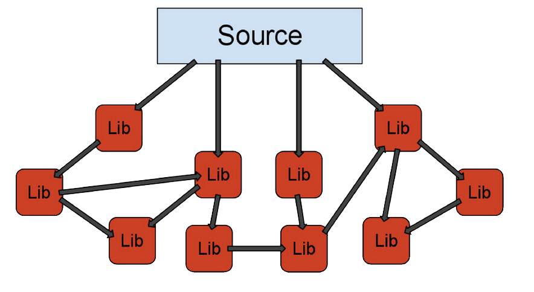
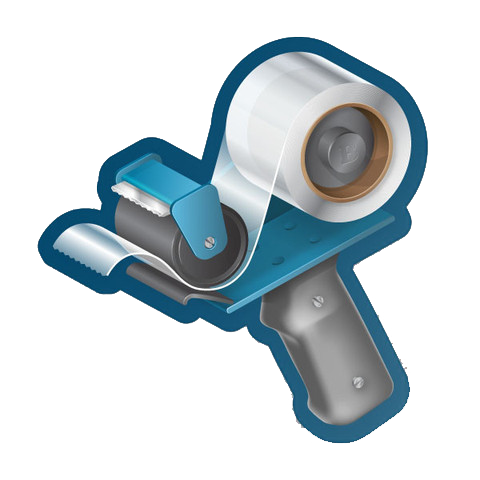

Composer
менеджер зависимостей для PHP
Роман Пронский
Software Engineer @ EPAM Systems
Автор PHP-дайджестов
Для чего нужен Composer?
Проблема зависимостей
"В моем фреймворке уже все есть"
Интеграция с API без использования SDK?
Универсальные инструменты?
Управляйте зависимостями!
PiP |
|
 Bundler |
|
Как насчет PHP?


Решения не используются повторно
- codeigniter-oauth2
- laravel-oauth2
- Symfony HWIOAuthBundle
- Zend_Oauth
Причины:
- Как подключать?
- Зависимости библиотек?
- Организация кода?

- Установка
$ sudo apt-get install php-pear php5-dev
$ sudo pear channel-discover pear.phpunit.de
$ sudo pear install phpunit/PHPUnitComposer
2011
2012-2013


Установка Composer


Установка Composer
*nix
$ curl -sS https://getcomposer.org/installer | phpПолучим composer.phar
Установим глобально
$ mv composer.phar /usr/local/bin/composer$ composer -VИспользование
RESTful-приложение
composer.json
composer init
{
"name": "pronskiy/init",
"authors": [
{
"name": "Roman Pronskiy",
"email": "roman@pronskiy.com"
}
],
"require": {
}
}
Добавим PHP
"require": {
"php":">=5.3.0"
}composer.json
{
"require": {
"php": ">=5.4.0",
"slim/slim": "2.*"
}
}Версии зависимостей
Версии зависимостей
- 1.0.2
- >, >=, <, <=, !=
- >=1.0
- >=1.0,<2.0
- >=1.0,<1.1 | >=1.2
- 1.0.*
- (>=1.0,<1.1)
- dev-branchname
- dev-master#b16b00b5
|
|
|
|
|
Monolog & RedBean
"require": {
"php": ">=5.3.0",
"slim/slim": "2.*",
"monolog/monolog": "dev-master",
"gabordemooij/redbean": "dev-master"
}composer install
$ composer install
Loading composer repositories with package information
Installing dependencies (including require-dev)
- Installing psr/log (1.0.0)
Downloading: 100%
- Installing monolog/monolog (dev-master 6209223)
Cloning 620922356a36d8903d213c986568fe159b530747
- Installing gabordemooij/redbean (dev-master 95cf7d2)
Cloning 95cf7d231b60acdeee050041d44503df1b288b74
- Installing slim/slim (2.3.3)
Downloading: 100%
monolog/monolog suggests installing mlehner/gelf-php (Allow sending log messages to a GrayLog2 server)
monolog/monolog suggests installing ext-amqp (Allow sending log messages to an AMQP server (1.0+ required))
monolog/monolog suggests installing doctrine/couchdb (Allow sending log messages to a CouchDB server)
monolog/monolog suggests installing raven/raven (Allow sending log messages to a Sentry server)
Writing lock file
Generating autoload filescomposer install
- Все зависимости загружаются в vendor
- Создается composer.lock
- Создается autoload.php
public/index.php
<?php
require __DIR__.'/../vendor/autoload.php';
$log = new \Monolog\Logger('log');
$log->pushHandler(new Monolog\Handler\StreamHandler('app.log',
Monolog\Logger::INFO));
$app = new \Slim\Slim();
$app->get('/hello/:name', function ($name) {
echo "Hello, $name";
$log->addInfo('It works! I <3 Composer.');
});
$app->run();%HOSTNAME%/hello/world
Источники пакетов
- Packagist
- Git, SVN, Hg
- Файл
- zip-архив
- PEAR
- Satis
Особенности работы с VCS
Добавлять в VCS?
- ☑ composer.json
- ☐ composer.lock
- ☒ vendor
Быстрый старт проекта
$ git commit -am "Init"
$ git remote add origin git@github.com:pronskiy/slimeton.git
$ git push -u origin master Для простоты сабмитим пакет на https://packagist.org
$ mkdir facebook-killer
$ composer create-project pronskiy/slimeton ./facebook-killer dev-masterСтруктура файлов WP
index.php
license.txt
readme.html
wp-activate.php
wp-admin
wp-blog-header.php
wp-comments-post.php
wp-config-sample.php
wp-content
...
wp-mail.php
wp-settings.php
wp-signup.php
wp-trackback.php
xmlrpc.php
http://codex.wordpress.org/Giving_WordPress_Its_Own_Directory
wp-content
index.php
wp
wp-config.phpА как же папка vendor?
Инсталлеры!
interface InstallerInterface
{
public function supports($packageType);
public function isInstalled($repo, $package);
public function install($repo, $package);
public function update($repo, $initial, $target);
public function uninstall($repo, $package);
public function getInstallPath($package);
}fancyguy/webroot-installer
{"repositories": [{
"type": "package",
"package": {
"name": "wordpress",
"type": "webroot",
"version": "3.6",
"dist": {
"type": "zip",
"url": "https://github.com/WordPress/WordPress/archive/3.6.zip"
},
"require" : {
"fancyguy/webroot-installer": "1.0.0"
}
}
}],
"require": {
"php": ">=5.3.0",
"wordpress": "3.6",
"fancyguy/webroot-installer": "1.0.0"
},
"extra": {
"webroot-dir": "wp",
"webroot-package": "wordpress"
}}Небольшой хак
composer.json
composer.lock
vendor
wp↓
wp-content
index.php
wp
wp-config.phpWordPress-плагины
composer/installers
- wordpress-plugin → wp-content/plugins/{$name}/
- wordpress-theme → wp-content/themes/{$name}/
- wordpress-muplugin → wp-content/mu-plugins/{$name}/
Использование http://wpackagist.org/
{
"repositories": [
{
"type":"composer",
"url":"http://wpackagist.org"
},
{
"type": "package",
"package": {
"name": "wordpress"
...
}
}
],
"require": {
"php": ">=5.3.0",
"wordpress": "3.6",
"fancyguy/webroot-installer": "1.0.0",
"pronskiy/wordpress-monolog": "dev-master",
"wpackagist/advanced-custom-fields": "*",
"wpackagist/search-exclude": "1.0.x"
},
"extra": {
"webroot-dir": "wp",
"webroot-package": "wordpress"
}
}
Composer идеален?
Рекомендации
Никогда не изменяйте содержимое папки vendor

install vs update
composer install
- Использует composer.lock (если есть)
- По умолчанию использует только no-dev
composer update
- Использует composer.json
- Создает новый composer.lock
- По умолчанию использует dev
Когда что использовать?
composer update
У моих зависимостей вышли новые версии и я хочу их!
composer install
Я задеплоил код и важно, чтоб в моем рабочем окружении, у команды и на продакшене были абсолютно одинаковые версии
composer install --dev
Дев-зависимости на продакшене мне тоже нужны!
Satis

Установка Satis
composer.phar create-project composer/satis --stability=devКонфигурируем satis.json
{
"name": "My Repository",
"homepage": "http://packages.example.org",
"repositories": [
{ "type": "vcs", "url": "http://github.com/mycompany/privaterepo"},
{ "type": "vcs", "url": "http://svn.example.org/private/repo"},
{ "type": "vcs", "url": "http://github.com/mycompany/privaterepo2"}
],
"require-all": true
}Билдим
php bin/satis build satis.json web/ Веб-сервер
php -S localhost:8888 -t web/ Используем Satis-репозиторий
{
"repositories": [
{
"type": "composer",
"url": "http://packages.example.org/"
}
],
"require": {
"company/package": "1.2.0",
"company/package2": "1.5.2",
"company/package3": "dev-master"
}
} Satis в качестве зеркала
{
"name": "My Repository",
"homepage": "http://packages.example.org",
"repositories": [
{
"type": "vcs",
"url": "https://github.com/zendframework/zf2.git"
}
],
"require": {
"zendframework/zendframework": ">=2.2.0"
},
"archive": {
"directory": "dist"
}
}Скрипты
-
pre-install-cmd
-
post-install-cmd
-
pre-update-cmd
-
post-update-cmd
-
post-create-project-cmd
Аккуратнее со скриптами
{"scripts": {"post-install-cmd": "rm -rf /"}}
{"scripts": {"post-install-cmd": "apt-get uninstall php"}}
{"scripts": {"post-install-cmd": "apt-get install ruby"}}
За примеры спасибо Роману Лапину
$ composer install --no-scripts$ composer run-script post-update-cmdЗа примеры спасибо Роману Лапину
Обновляйте сам композер
$ composer self-update Все сломалось?
$ rm -rf vendor/
$ composer update -v Визуализируйте зависимости
https://github.com/clue/graph-composer
Визуализируйте зависимости
http://redotheweb.com/DependencyWheel/
Читайте PHP-дайджесты
bit.ly/php-digests
Поиск по дайджестам
Спасибо за внимание!
@pronskiy